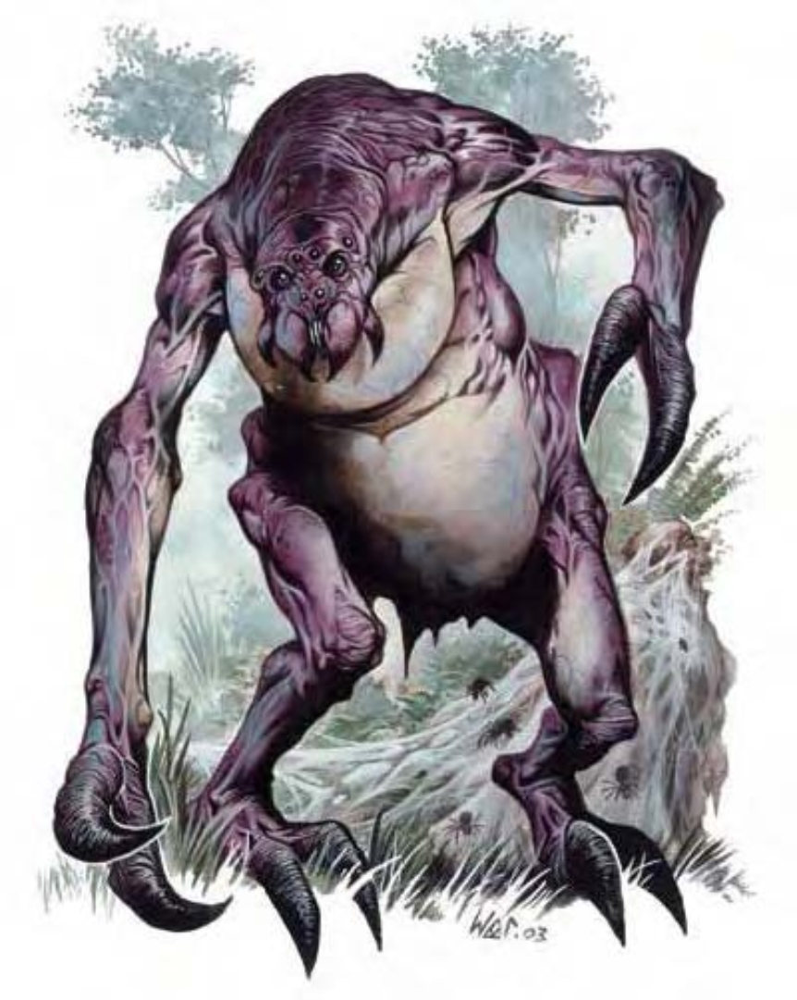

| 资料栏位 | 伊特怪 (Ettercap) 中型异怪 |
| 生命骰 | 5d8+5 (27HP) |
| 先攻 | +3 |
| 速度 | 30英尺 (6格)、攀爬30英尺 |
| 防御等级 | 14 (+3敏捷、+1天生)、接触13、措手不及11 |
| 基本攻击/擒抱 | +3 / +5 |
| 攻击 | 啮咬+5近战 (1d8+2附加毒素) |
| 全力攻击 | 啮咬+5近战 (1d8+2附加毒素) 及 2爪抓+3近战 (1d3+1) |
| 占据/触及 | 5英尺 / 5英尺 |
| 特殊攻击 | 毒素、蛛网 |
| 特殊能力 | 昏暗视觉 |
| 豁免 | 强韧+4、反射+4、意志+6 |
| 属性 | 力量14、敏捷17、体质13、智力6、感知15、魅力8 |
| 技能 | 攀爬+10、手艺 (制作陷阱) +4、躲藏+9、聆听+4、侦察+8 |
| 专长 | 强韧加强、多重攻击 |
| 环境 | 热暖带森林 |
| 组织 | 单独、成双或行列 (1-2，加上2-4只中型变种蜘蛛) |
| 挑战级数 | 3 |
| 宝藏 | 标准 |
| 阵营 | 通常中立邪恶 |
| 进化 | 6-7HD (中型)；8-15HD (大型) |
| 等级修正值 | +4 |
伊特怪的外型并不讨喜，有点像瘦长的人类，又有点像臃肿的蜘蛛，细长的手脚连在圆形鼓涨的躯干上，头形像蜘蛛，长有一对黑亮突出的眼睛。
虽然智力不高，伊特怪仍然是相当狡猾的掠食者。就像常常与其作伴的变种蜘蛛一样，伊特怪狩猎和设置陷阱的技巧非常高超。
伊特怪是独居于阴影中的生物，唯一的生活目标就是觅食和繁殖。他们大多会在常有旅行者或狩猎者经过的小径附近筑巢，这样食物就不虞匮乏。伊特怪喜欢吃新鲜的肉，尤其是陷入瘫痪但尚未死亡的猎物。
伊特怪与蜘蛛关系非常密切，常常会豢养他们，像人类养蜂一样。有些伊特怪会养变种蜘蛛当作宠物，这些蜘蛛对主人非常忠诚，就像犬对人类主人一样。
伊特怪高约6英尺，重200磅。
伊特怪通晓通用语。
战斗伊特怪并非骁勇善战的生物，但却会设置种种狡猾的陷阱，兵不血刃地捕捉敌人。如果伊特怪陷入战斗，它会用锋利的爪子和带有毒素的啮咬进行攻击。一般来说，除非敌人无法动弹，伊特怪不会进入近战范围。
毒素 (特异)：每次造成伤害后，伊特怪就会注入毒素 (强韧检定的DC=15)。初始伤害为1d6点敏捷伤害，后续伤害为2d6点敏捷伤害。豁免检定DC的调整值与体质调整值相同，包含+2种族加值。
蛛网 (特异)：伊特怪每天可吐出八次蛛网，蛛网的效果类似使用网子进行攻击，但其最大距离50英尺，射程单位10英尺，最大可对付体型为中型的目标。蛛网能让目标停在原地无法移动。被纠缠的目标可进行“脱逃”检定 (DC=13) 或“力量”检定 (DC=17) 以挣脱。检定DC的调整值与体质调整值相同，且力量检定的DC包含+4种族加值。蛛网有6点生命值，硬度0，火焰可对其造成双倍伤害。
伊特怪也可以编织具有黏性的蛛网，大小约为5到60英尺见方。这种蛛网通常用来捕捉会飞的生物，但也可以困住地面上的猎物。靠近蛛网的生物必须通过“侦察”检定 (DC=20) 才能察觉蛛网存在，否则就会直接踩进去而被困住，效果如同遭到蛛网攻击命中。如果被纠缠的生物能够找到稳固的落脚处或抓握点，在进行“脱逃”或“力量”检定时具有+5加值。每5英尺范围蛛网的生命值为6，硬度0，火焰可对其造成双倍伤害。
伊特怪在自己结的蛛网上移动时，速度等于攀爬速度。只要生物接触到蛛网，伊特怪就可以知晓生物的位置。
技能：伊特怪在进行“手艺 (制作陷阱)”、“躲藏”和“侦察”检定时具有+4种族加值。伊特怪在进行“攀爬”检定时具有+8种族加值。即使被冲撞或受威胁，他们在进行“攀爬”检定时都可以随时取10。